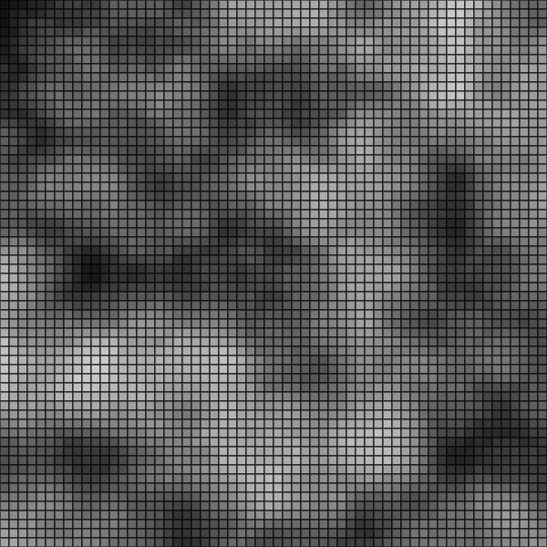
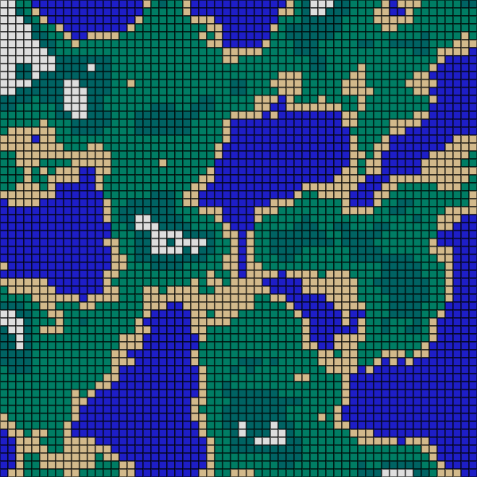
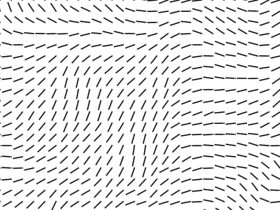
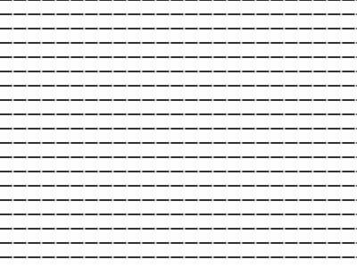
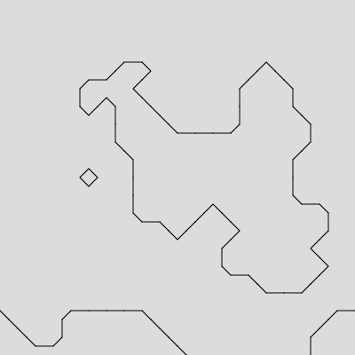
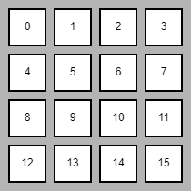
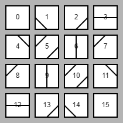
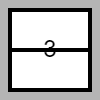
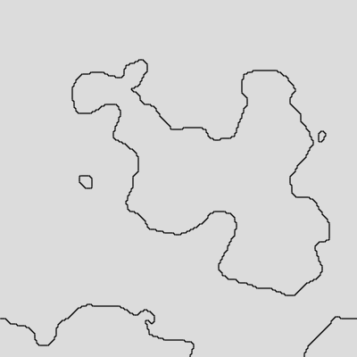

We've explored the noise() function before, which generates semi-random numbers. The value that a noise() function generates is based on the parameter given to it.
The sketch below is essentially a graph of a noise function. The loop generates every x value on the window, feeds it to the noise function. The result is then used as the y value:
let n = noise(x*0.01); let y = n * height;
What's the extra math?
x*0.01? The noise() function has a quality that very close numbers are close to each other, and x increasing by 1 is just too much. We multiply by 0.01 so that each consecutive x value is only 0.01 away from the previous. This helps generate 'smooth' noise.
n* height? The result of noise is always between 0 and 1, which would just be too tiny. We multiply it by the height so that it now ranges from 0 to the height of the canvas.
This noise value doesn't have to represent a location, like a y value. Instead, it could represent how bright or dark a square is. We could have a loop that chose a square's fill based on the noise value returned
for(let x =0; x<width;x+=20){
let n = noise(x*0.01); //get a noise value based on x
let brightness = n*255;
fill(brightness);
rect(x,0,20,20);
}
Running this loop would provides square's who's brightness was random-ish, but close to those that are near.


We've been imagining the noise function as one value in, one value out. This make a noise space that we visualize in one dimension, which . But the noise() function is actually set up in at way that it represents a two dimensional noise field, meaning we can give the noise function an x and a y location and it will produce a random-ish value.
We can use our two-dimensional loops to help visualize
for (let x = 0; x < width; x += 10) {
for (let y = 0; y < height; y += 10) {
let n = noise(x*0.01,y*0.01);
fill(n*255)
square(x,y,10);
}
}
Notice how this time we're using the x and y location to get a noise() value
let n = noise(x*0.01,y*0.01);

Notice how the brightness of each square is close to the ones next to it, and that extends in all directions.
The 'natural randomness' of noise functions are used a lot when creating procedurally generated maps. If we interpret the noise value a little differently, we can create a random map generator.

To generate a map like the one above, the noise value will help you choose between one of five colors for the fill of each square.
A noise value from 0 to .4 is the water block, and should be blue
A noise value from .4 to .5 is the beach block, and should be tan
A noise value from .5 to .6 is a forest block and should be light green
A noise value from .6 to .7 is a mountain forest block and should be dark green
A noise value above .7 is the mountaintop and should be white
Use a series of if statements to help you choose the appropriate fill for each box,
Feel free to use my rgb values, or make up your own:
- Water: 30,30,199
- Beach: 210,185,139
- Forest: 0,125,100
- Mountain Forest: 0,99,99
- Mountain Top: 222,222,222

A vector field is a space where every location has a direction associated with it. That direction is usually represented at that location with a vector pointing in the corresponding direction. If we generate them out of a noise() field, it is another way of seeing the shape of the data.
Using a nested loop and the code above, we can generate every x,y and the associated line, but to get it to point will require switching to a translate() and rotate() style of drawing.
This means that instead of drawing things at (x,y), we will be translating to (x,y) and drawing at (0,0).
Create a new sketch and insert a nested loop into it that will generate pairs of (x,y) values that are 20 pixels apart.
At each location:
angleMode(DEGREES); translate(x,y); rotate(0); line(0,0,16,0); resetMatrix(); //important during the loop.
The purpose of this code will be to draw a line pointing to the right of each location. We use translate() to change where (0,0) is, we do no rotation, and then we draw a line that goes 16 pixels to the right. Lastly it resets the matrix, undoing the translation and rotation before the loop finishes. This is important, sine we are translating the entire x,y each time and we don't want it to grow out of control as the loop runs.
With this code in your loop, run your sketch and make sure that you see all horizontal, unrotated lines at every location.

In order to generate the vector field using noise(), we are going to perform a similar process as before. We get a noise() value related to our location, then perform a little math to get it into the appropriate range.
let n = noise(x*0.01,y*0.01); //Get a location-based noise() value let angle = n * 360; //'stretch' its range to fit 0 - 360
Modify your loops to use this at each location and then modify the rotate(0) call to be rotate(angle);
Run your code one more time after this change and you should be generating a proper noise field.
If you click on the canvas above, you'll see that it is interactive and you can place a small circle on the field. That circle is a traveler, and will start to wander around, but using the flow of the vector field to guide it.
The basic setup is much like our Pong ball that moved around the screen:
- Declare two global variables to represent the x and y of the traveler's location.
- In setup, assign them to represent the middle of the window
- In draw, after drawing all of the lines draw a single circle, using the new global variables as the location.
With this completed, you should be able to run your sketch and see the traveler in the center of the window, not moving.
We make movement by changing the x and y values a small amount with each draw cycle. In the past we've used speed variables, but now we want each movement to be tied to the noise value at the traveler's location.
Like before, we want to first get a noise value, and then map it to an angle. Use the noise() function as you have been, except this time using the traveler's x and y variables. After getting an angle it's time for a little trig:
These two lines will calculate the x and y components of you movement. All that's left to do is to move the traveler by increasing its x and y variables by the calculated dx and dy.
For this sketch, each of the squares is using a two-dimensional noise() value to help it generate its:
- size
- color
- rotation angle
The motion that you're seeing comes from including the ever-changing frameCount as the third parameter of our noise() function
This means that we can get two-dimensional noise, but it will be slightly different each frame. Once you have the noise value, you can map() it to the ranges to help you with the size, color, and rotation.
The best way to draw a rotated square is to rely on the use of translate(), rotate(), and resetMatrix(), as you did in the previous sketch. Translate to the location that you want to draw the square, rotate the angle that you want it to be, and draw it at (0,0) with rectMode(CENTER) on.
When you've finished, run your sketch to make sure that the you can see the size, color, and rotation of you squares changing in a 'noisy' way.
Marching Squares is a computer graphics technique for creating two dimensional shapes from a scalar field, which is exactly what our noise() function provides.
- First we will use the idea of a threshold with our noise() field to determine which locations should be included.
- Then we will use marching squares to encapsulate them with a border.
- If we stop drawing the dots, we will be left with our shape.
 -->
-->  -->
-->

One major ability that we will need is to draw lines that are separating the dots that we create. Before we start generating those dots, we are going to perfect the drawing function.
The key to a Marching Squares algorithm is to break the entire canvas into squares, each with a corner at one of the key points. If you consider every combination of black/white dots, you will end up with 16 possible lines that you may have to draw.

The Marching Squares sketch comes with a function whose entire purpose is to draw the line within one square: drawCase(). The draw() function comes prefilled with a call to drawAllCases() to help test your function. When run as it is, it looks like this:

function drawCase(c, x, y, size)
Notice that the drawCase() function takes in a lot of parameters: the case number, c, and an x ,y, and size that are meant to represent the location and size of their square. Currently, all the function does is draw the square and the case number. This is why the image above looks like that.
We are going to use it as a reference to make sure that our finished drawCase() covers all possibilities, and then remove the rectangle and text that are there.

-->
The drawCase() function is essentially a large if-chain that looks at the c parameter to see which case we're dealing with, and then responds by drawing the appropriate line.
Notice that when the lines are drawn, they attach two midpoints in each of the rectangles. Since these points are halfway through our shapes, I will expect a lot of x + size/2 or y + size/2 in our lines.
For example, when the case is 3, the line is horizontal

Since we are in corner mode x represents the left side, while x + size represents the right. Both ends of this line are halfway down the square, which is a y value of y + size.
Left Point: (x, y + size/2)
Right Point: (x + size, y + size/2)
Since we only want this to happen when the case is three, we need to use an if statement focusing on the c variable.
if( c == 3 ){ //In Case 3
let x1 = x;
let y1 = y + size/2;
let x2 = x + size;
let y2 = y + size/2;
line( x1, y1, x2, y2 );
}
This uses four extra variables for organization, but they are not required.
Note that there are only eight unique patterns of lines. Everything past case 7 are duplicates of another one. So you could rewrite the above if statement as if( c == 3 || c == 12) to take care of two situations at once.
Your job now is to add the seven remaining if statements representing all of the other cases. Do them one/two at a time and check with the references above to make sure that you end up with the correct lines.
Once you've finished, remove the text() and rect() from your drawCase() function to leave just the line drawing.
-->
The draw function is calling drawAllCases() for the purpose of being able to look at every case at once. After verifying that all cases are drawn properly, remove the call to drawAllCases() from draw(). This should leave you will a blank canvas when you re-run the sketch.

Now that we have a drawing function, we need to generate a grid of values for us to work with. If you look at the dots in image above,you'll see that they are not random. They are clustered together because they are generated using a noise() field. But noise() values are decimals from 0 to 1. In order to get the proper yes/no for each location, we're going to need to use a threshold to determine if the dots should be 'included' or not.
The first thing that we will do is try to create a function that will look at a certain location in the noise field and return a boolean if it is larger than a threshold.
While still working in the 'Marching Squares with Noise' workspace, add the following function to it along side the setup(), draw(), and drawCase() functions:
//returns true if the given location is above the threshold
function thresh(x,y){
//get the noise value associated with x,y
var n = noise(x*0.01,y*0.01);
//return true or false based on the value of n
}
This function takes a location (x,y) and determines its corresponding noise value. Since a noise() value is between 0 and 1, we'll decide that the threshold is 0.5.
Your task is to finish the the thresh() function so that it returns true if the n value is above 0.5, return true. Otherwise return false.
To test your function, put the following in draw(). This should replace the loops that were previously there to help create the drawCase() function, so make sure you've finished that one first.
if( thresh(mouseX,mouseY) )
fill(255);
else
fill(0);
circle(mouseX,mouseY,40);
Remember that if a function returns a boolean, it may be used to directly run an if statement. This if statement is using the thresh() function in an if to check if the mouse's location is above the threshold. A circle is then drawn at the mouse location using the chosen color. This should allow us to hover over a location on the screen and see if it is above or below the threshold
When you run your sketch, wave the mouse over the canvas and make sure that the circle changes from black to white. It should not be randomly flashing, instead certain areas of the sketch will be black and the rest be white.
With the thresh() function working, it's time to draw the whole grid using it. Use a nested loop to visit a grid of (x,y) locations. Mine are 20 apart, but you may choose your own spacing. Use an if statement to choose the fill of the color of each circle.
When run, a grid of dots should appear. Like the image at the top of the page, but different values. They should be semi-grouped together instead of completely random.
Now that we have the grid of dots and a function to help draw the lines, we can complete the Marching Squares algorithm by incorporating the functions together.
Inside your loop you are currently drawing a single circle each time. The intention will be to simultaneously use the drawCase() function to draw the lines. Before we make it perfect, we can make sure that we can get it to draw something at each location. From there we can worry about exactly what.
Remember that drawCase takes in a lot of parameters representing the case, x, y, and size. Go to the nested loop inside the draw() function and use your looping x/y variables to also call the drawCase() function with this line of code:
drawCase( 1, x, y, 20 ); //Draw case 1, of size 20, at every (x, y)
The x and y are the variables that change each time, but here we are always drawing case 1, of a size 20. Since you are always drawing the same case, it should look very repetitive:

To make things easy, we drew case 1 every time we used the drawCase() function. The last thing that we need to do is replace that 1 with a value that is actually derived using the location.
As we visit each location and draw dots, we are also going to want to draw the lines surrounding them. This means that we are going to have to determine which case that is associated with each location.
The thresh() function can be used to analyze any single location, but in order to determine the case we will need to look at the four different locations that make up our square.
This means that we will not only care about the threshold at (x,y), but also the other corners. If our squares have a size of 20, the other points would be: (x + 20, y), (x, y+ 20), and (x+20, y + 20).
The cases are chosen in a way that is very binary friendly. Each of the four corners is given a value:
- bottom-left is worth 1
- bottom-right is worth 2
- top-right is worth 4
- top-left is worth 8
The case is the sum of those values that are above the threshold.
For example, all corners for Case 0 are white, therefore nothing gets added.

But case 12 has the top two values are black, so we add 8 and 4 to get 12.

We know the four locations that we are interested in are (x,y), (x+20, y), (x, y+20), (x+20, y+20), and we know that the thresh() function will tell us if they pass the threshold or not. Consider the code below:
let sum = 0; if( thresh( x,y ) ) //if the location x,y is above the threshold, add eight to the sum variable sum += 8;
After this code runs, there are two possibilities for the sum variable. If the thresh() returned a true value for location (x,y), sum will end at 8. If not, sum will remain at zero. By doing this we are giving the location (x,y) a weight of 8 in our overall sum.
You will need to do something like this during your loop, as you visit each (x,y). To finish the sum you will need three more if statements similar to the one given. Each time you should focus on one of the different corner points and add the related value 4, 2, or 1. After all four if statments the sum's value should be the correct case. Modify the call to drawCase() to use it instead of the previous 1.
drawCase( sum , x, y, 20 ); //Draw case determined by sum, of size 20, at every (x, y)
If done properly, running your sketch should now produce a line that separates the groups of values.
If you comment out the line where you draw the circles, you will be left with just the outline, producing the image on the right.
Our noise() grid only uses two of the three possible parameters that you could give a noise() function. If we use frameCount to help the third parameter be different every time, we can get a slightly different noise space each time. In the thresh() function is where you have a line generating a noise value:
let n = noise(x*0.01,y*0.01);
Modify it to include the frameCount as the third parameter:
let n = noise(x*0.01,y*0.01, frameCount*0.003); //Make 0.003 bigger or smaller to change speed
After this change, you should see the outlined shape morphing a little bit.
We chose a size of 20 to use when deciding how far apart the dots should be. If you want a smoother shape, you can modify your code to be a smaller value, like 4.
Keep in mind that the noise() function is heavy, so as some point your browser will start to lag.
